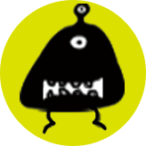

Adopt a monster, which is a project you create. Find big projects are difficult to focus on? They are supposed to be broken down into small actionable tasks.

Each little monster corresponds a small task. Don't get your little monsters starved. They need you to work hard and get pizzas.

Every pizza represents interval 30 minutes in lengths. Once you have finished a 30-minutes work, you can have a short break.
You will earn a badge once you have reached a specific accomplishment.